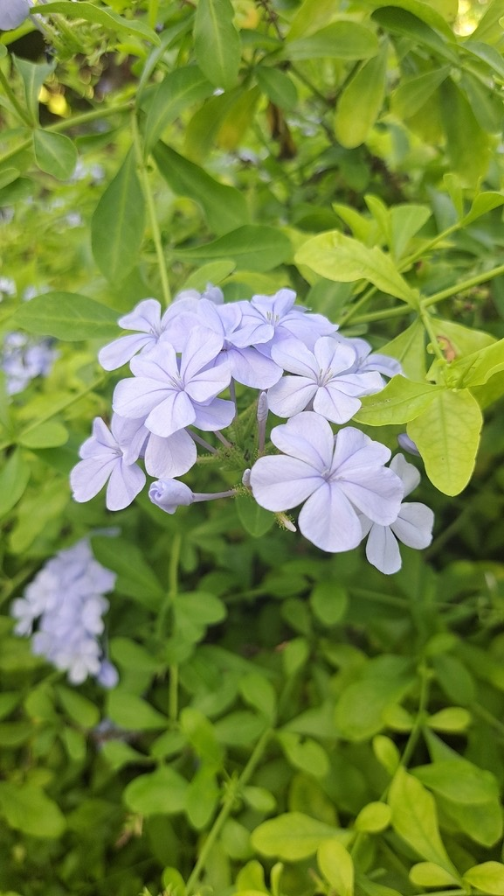

- That big sky-blue flowering bush near the front entrance is Plumbago — and at Palma Sola it's an unusually large one, anchoring Welcome Island as you come in.
- Its flowers are a favorite of the Cassius blue butterfly, whose caterpillars feed on the plant — a small blue butterfly for a sky-blue flower.
- Look closely and the flower base is sticky: glandular hairs let the spent blooms cling to fur and clothing, hitchhiking seeds to new ground.
- The name comes from the Latin plumbum, 'lead' — it was once believed to cure lead poisoning.
Native to South Africa and Mozambique, where it grows as a scrambling shrub in lowland scrub and thicket. Now one of the most popular warm-climate flowering shrubs worldwide, valued for its near year-round clouds of pale blue bloom.
- Plumbago is grown almost everywhere warm for one reason: few shrubs produce this much soft sky-blue flower for so little effort. It blooms spring through fall (nearly year-round in Florida), shrugs off drought once established, and resprouts cheerfully after hard pruning — which it needs, because left alone it becomes a sprawling, scrambling beast.
- At Palma Sola there isn't much of it — it's mostly just the one specimen, but it's a memorable one: a large blue-flowered bush on Welcome Island near the front entrance, right beside the Tree Crinum, and notably big for a plumbago. It takes regular cutting and trimming to keep in bounds.
- The spot has a small sad history, too — the plumbago once grew around a Bismarck palm that was lost in the hurricanes, one of several specimens the storms took from the park.
- Two nice details reward a close look. The flower's name traces to the Latin plumbum, 'lead': the plant was once thought to cure lead poisoning (and 'leadwort' carries the same idea). And the base of each flower is coated in sticky glandular hairs — sticky enough that in its native South Africa, children press the blossoms onto their ears like little earrings.
- That same stickiness is the plant's seed-dispersal trick, hitching spent flower capsules onto passing fur and clothing.
Plumbago is a genuine butterfly magnet. It is the larval host plant for the Cassius blue (Leptotes cassius), a tiny native blue butterfly whose caterpillars feed on the foliage and flowers, and its nectar-rich, long-tubed blue flowers draw butterflies, long-tongued bees, and other pollinators through most of the year. The sticky seed capsules enlist passing animals for dispersal.
As a large, dense, evergreen shrub, it also offers nesting and shelter cover for small birds — useful structure right at the park's entrance.
Spreads by underground runners (suckers) and seed; propagated easily from seed, cuttings, or rooted suckers. Vigorous — resprouts readily after heavy pruning.
Dense terminal clusters of five-petaled, phlox-like flowers about an inch wide, pale sky-blue (white and deeper-blue forms exist), each on a slender tube. Blooms spring through fall, nearly year-round in Florida.
A small, barbed, sticky capsule — the glandular-haired calyx clings to fur and clothing, dispersing the seed.
Thin, oval, bright green (greyish beneath), to about 2 inches, arranged alternately on arching semi-woody stems.
Mounding to scrambling shrub; can climb or sprawl several feet if unpruned.
At the front entrance, find the big blue-flowered bush on Welcome Island beside the Tree Crinum. Touch a spent flower cluster — feel how it sticks to your fingertip; that's the seed-dispersal mechanism at work. Watch the blooms for small blue butterflies (the Cassius blue) darting around their host plant.
Don't eat this plant. The sap can irritate skin, and swallowing any part causes digestive upset and mouth and throat irritation. Wear gloves when pruning.
It's not a serious hazard, but it isn't for eating.
It's mildly toxic to dogs as well — drooling, vomiting, and mouth irritation if eaten. Animals usually leave it alone; discourage chewing and keep clippings away from pets.
PARK CONTEXT: One main specimen, on Welcome Island near the front entrance, beside the Tree Crinum — large for a plumbago and needs regular trimming to control its sprawl. Little else of it elsewhere in the park. It formerly grew around a Bismarck palm that was lost in the hurricanes.


- © Yavid Justiniano (CC-BY-NC), via iNaturalist
- © Maria Escobar (CC-BY-NC), via iNaturalist
- © Ruby Meador (CC-BY-NC), via iNaturalist